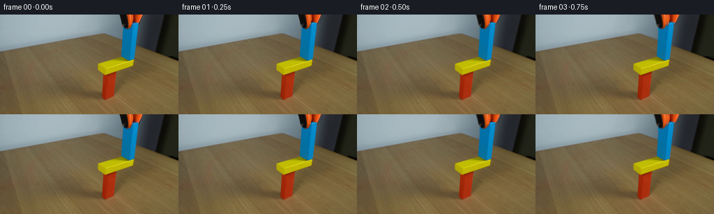
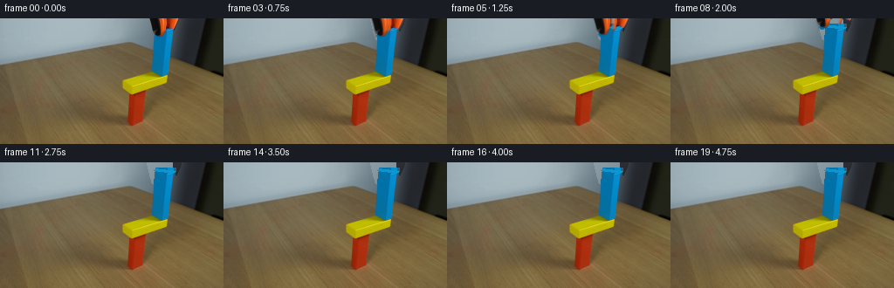
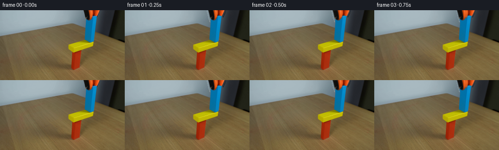
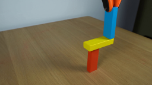
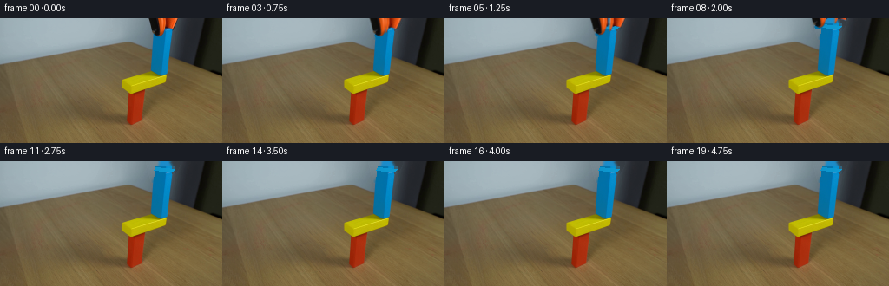
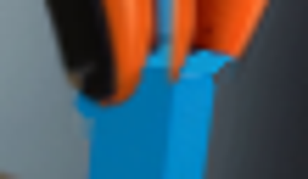
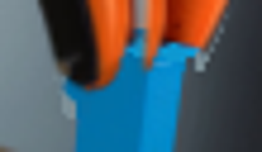

CODING AGENTS AS PIXEL WORLD MODELS
traex/GPT-5.6-Sol · 0181
点击播放 · 原生 RGB 像素
逐轮保存的候选
回放视频、检查图与代码变化。
每份候选均可单独播放。实际图片检查记录在下方工具轨迹中。
候选 01播放与检查图
点击播放 · 原生 RGB 像素


展开代码变化
--- 上一保存版本
+++ 本次保存版本
@@ -0,0 +1,111 @@
+from pathlib import Path
+import numpy as np
+import cv2
+from PIL import Image, ImageDraw
+import artifact_io
+
+HERE = Path(__file__).resolve().parent
+N, H, W = 20, 144, 256
+src = np.asarray(Image.open(HERE / 'first_frame.png').convert('RGB'), dtype=np.uint8)
+
+# Isolate the two visible halves of the orange/black gripper. The masks are
+# deliberately restricted to the upper border; this protects the blue block
+# and all of the balanced structure below it.
+hsv = cv2.cvtColor(src, cv2.COLOR_RGB2HSV)
+yy, xx = np.mgrid[:H, :W]
+orange = (yy < 24) & (xx > 167) & (xx < 211) & (hsv[...,0] < 18) & (hsv[...,1] > 105) & (hsv[...,2] > 75)
+# The left rubber gripping pad is black and silhouetted against the pale wall.
+left_pad = np.zeros((H,W), np.uint8)
+cv2.fillPoly(left_pad, [np.array([[170,0],[184,0],[189,9],[188,15],[184,21],[178,22],[174,17]], np.int32)], 255)
+# Keep only the genuinely dark part of that polygon, plus its antialiased rim.
+lum = cv2.cvtColor(src, cv2.COLOR_RGB2GRAY)
+left_pad = ((left_pad > 0) & (lum < 105))
+
+# Orange pieces are divided at the throat of the gripper so they open apart.
+left_core = ((orange & (xx <= 190)) | left_pad).astype(np.uint8) * 255
+right_core = (orange & (xx >= 188)).astype(np.uint8) * 255
+# Add a narrow feather which carries the original antialiasing with each part.
+def feather(mask, radius=2):
+ dil = cv2.dilate(mask, np.ones((3,3),np.uint8), iterations=radius)
+ return cv2.GaussianBlur(dil, (5,5), .75).astype(np.float32)/255.0
+left_a = feather(left_core, 1)
+right_a = feather(right_core, 1)
+# Avoid lifting blue pixels in the feather except where covered by solid tool.
+blue = (hsv[...,0] > 82) & (hsv[...,0] < 112) & (hsv[...,1] > 95)
+left_a[blue & (left_core == 0)] = 0
+right_a[blue & (right_core == 0)] = 0
+
+# Make a clean plate. Remove the tool, restore the wall/cabinet, then reconstruct
+# the small hidden cap of the blue wooden block from its already visible face.
+remove = np.maximum((left_a*255).astype(np.uint8), (right_a*255).astype(np.uint8))
+remove = cv2.dilate((remove > 12).astype(np.uint8)*255, np.ones((3,3),np.uint8), iterations=1)
+clean = cv2.inpaint(src, remove, 4, cv2.INPAINT_TELEA)
+
+# Analytic continuation of the blue face under the jaws. Colors are sampled
+# column-wise from the exposed block, preserving its natural light gradient.
+block_mask = np.zeros((H,W), np.uint8)
+front_poly = np.array([[179,7],[201,9],[199,23],[177,21]], np.int32)
+cv2.fillConvexPoly(block_mask, front_poly, 255)
+for y in range(6,24):
+ # perspective edges of the face
+ xl = int(round(179 + (177-179)*(y-7)/14))
+ xr = int(round(201 + (199-201)*(y-7)/14))
+ for x in range(max(0,xl), min(W,xr+1)):
+ # sample farther down the same slanted face
+ sy = min(39, 24 + max(0, y-7)//2)
+ sx = np.clip(x-1, 175, 197)
+ col = src[sy, sx].astype(np.int16)
+ # very slight top-to-bottom illumination variation
+ col = np.clip(col + (4 if y < 11 else 0), 0, 255)
+ if remove[y,x] or not np.any(src[y,x] == clean[y,x]):
+ clean[y,x] = col.astype(np.uint8)
+# Give the newly exposed top a restrained wooden-block top plane.
+top_poly = np.array([[179,7],[201,9],[198,12],[177,10]], np.int32)
+topmask = np.zeros((H,W), np.uint8); cv2.fillConvexPoly(topmask, top_poly, 255)
+top_color = np.array([13,151,207], np.float32)
+for y,x in zip(*np.nonzero((topmask>0) & (remove>0))):
+ # subtle cross-face gradient, no synthetic flat fill
+ clean[y,x] = np.clip(top_color + np.array([0, (x-188)*.35, (x-188)*.45]),0,255).astype(np.uint8)
+
+# Restore every source pixel outside the removal zone exactly. This keeps the
+# locked camera/table and the entire balancing structure rock steady.
+clean[remove == 0] = src[remove == 0]
+
+
+def warp_layer(image, alpha, dx, dy, angle=0.0, pivot=(188,12)):
+ M = cv2.getRotationMatrix2D(pivot, angle, 1.0)
+ M[:,2] += (dx,dy)
+ wi = cv2.warpAffine(image, M, (W,H), flags=cv2.INTER_LINEAR,
+ borderMode=cv2.BORDER_CONSTANT, borderValue=(0,0,0))
+ wa = cv2.warpAffine(alpha, M, (W,H), flags=cv2.INTER_LINEAR,
+ borderMode=cv2.BORDER_CONSTANT, borderValue=0)
+ return wi, np.clip(wa,0,1)
+
+frames = []
+# A short grip/release, followed by a smooth upward withdrawal. Final seconds
+# hold on the successful scientific balance demonstration.
+# opening amount in pixels, rise in pixels, and a mild outward rotation
+motion = [
+ (0,0,0), (0,0,0), (.6,0,.4), (1.4,.2,.8), (2.4,.8,1.3),
+ (3.5,2.0,1.8), (4.7,4.0,2.3), (5.8,7.0,2.8),
+ (6.8,10.5,3.2), (7.8,14.5,3.5), (8.5,19.0,3.8)
+]
+for i in range(N):
+ if i == 0:
+ frames.append(src.copy())
+ continue
+ frame = clean.astype(np.float32)
+ if i < len(motion):
+ op, rise, ang = motion[i]
+ # Left and right jaws separate before travelling up out of view.
+ li, la = warp_layer(src, left_a, -op, -rise, +ang, pivot=(187,11))
+ ri, ra = warp_layer(src, right_a, +op, -rise, -ang, pivot=(191,11))
+ for layer, a in ((li,la),(ri,ra)):
+ aa = a[...,None]
+ frame = layer.astype(np.float32)*aa + frame*(1-aa)
+ frames.append(np.clip(frame,0,255).astype(np.uint8))
+
+frames = np.stack(frames, axis=0)
+assert frames.shape == (20,144,256,3) and frames.dtype == np.uint8
+assert np.array_equal(frames[0], src)
+artifact_io.save(frames, HERE)
候选 02播放与检查图
点击播放 · 原生 RGB 像素

展开代码变化
--- 上一保存版本
+++ 本次保存版本
@@ -39,33 +39,41 @@
# the small hidden cap of the blue wooden block from its already visible face.
remove = np.maximum((left_a*255).astype(np.uint8), (right_a*255).astype(np.uint8))
remove = cv2.dilate((remove > 12).astype(np.uint8)*255, np.ones((3,3),np.uint8), iterations=1)
-clean = cv2.inpaint(src, remove, 4, cv2.INPAINT_TELEA)
+clean = src.copy()
+# The original background behind this small top-border tool is the softly lit
+# wall (the dark cabinet edge is much farther right). A same-row wall sample
+# gives a considerably cleaner plate than generic inpainting, which can pull
+# saturated blue from the held block up into the background.
+for y,x in zip(*np.nonzero(remove > 0)):
+ sx = 150 + min(12, max(0, (x-170)//3))
+ clean[y,x] = src[y, sx]
# Analytic continuation of the blue face under the jaws. Colors are sampled
# column-wise from the exposed block, preserving its natural light gradient.
block_mask = np.zeros((H,W), np.uint8)
-front_poly = np.array([[179,7],[201,9],[199,23],[177,21]], np.int32)
+front_poly = np.array([[178,7],[201,10],[199,24],[176,22]], np.int32)
cv2.fillConvexPoly(block_mask, front_poly, 255)
-for y in range(6,24):
+for y in range(6,25):
# perspective edges of the face
- xl = int(round(179 + (177-179)*(y-7)/14))
- xr = int(round(201 + (199-201)*(y-7)/14))
+ xl = int(round(178 + (176-178)*(y-7)/15))
+ xr = int(round(201 + (199-201)*(y-7)/15))
for x in range(max(0,xl), min(W,xr+1)):
# sample farther down the same slanted face
- sy = min(39, 24 + max(0, y-7)//2)
- sx = np.clip(x-1, 175, 197)
+ sy = min(38, 25 + max(0, y-7)//3)
+ # Match perspective: the visible face drifts left toward its foot.
+ sx = np.clip(x-2, 176, 197)
col = src[sy, sx].astype(np.int16)
# very slight top-to-bottom illumination variation
col = np.clip(col + (4 if y < 11 else 0), 0, 255)
- if remove[y,x] or not np.any(src[y,x] == clean[y,x]):
+ if remove[y,x]:
clean[y,x] = col.astype(np.uint8)
# Give the newly exposed top a restrained wooden-block top plane.
-top_poly = np.array([[179,7],[201,9],[198,12],[177,10]], np.int32)
+top_poly = np.array([[178,7],[201,10],[198,12],[176,9]], np.int32)
topmask = np.zeros((H,W), np.uint8); cv2.fillConvexPoly(topmask, top_poly, 255)
top_color = np.array([13,151,207], np.float32)
for y,x in zip(*np.nonzero((topmask>0) & (remove>0))):
# subtle cross-face gradient, no synthetic flat fill
- clean[y,x] = np.clip(top_color + np.array([0, (x-188)*.35, (x-188)*.45]),0,255).astype(np.uint8)
+ clean[y,x] = np.clip(top_color + np.array([0, (x-188)*.22, (x-188)*.32]),0,255).astype(np.uint8)
# Restore every source pixel outside the removal zone exactly. This keeps the
# locked camera/table and the entire balancing structure rock steady.
候选 03播放与检查图
候选 04播放与检查图
点击播放 · 原生 RGB 像素

展开代码变化
--- 上一保存版本
+++ 本次保存版本
@@ -45,7 +45,8 @@
# gives a considerably cleaner plate than generic inpainting, which can pull
# saturated blue from the held block up into the background.
for y,x in zip(*np.nonzero(remove > 0)):
- sx = 150 + min(12, max(0, (x-170)//3))
+ # The sloping wall/cabinet boundary passes immediately behind the block.
+ sx = (150 + min(12, max(0, (x-170)//3))) if x < 198 else 214
clean[y,x] = src[y, sx]
# Analytic continuation of the blue face under the jaws. Colors are sampled
@@ -71,7 +72,7 @@
top_poly = np.array([[178,7],[201,10],[198,12],[176,9]], np.int32)
topmask = np.zeros((H,W), np.uint8); cv2.fillConvexPoly(topmask, top_poly, 255)
top_color = np.array([13,151,207], np.float32)
-for y,x in zip(*np.nonzero((topmask>0) & (remove>0))):
+for y,x in zip(*np.nonzero(topmask>0)):
# subtle cross-face gradient, no synthetic flat fill
clean[y,x] = np.clip(top_color + np.array([0, (x-188)*.22, (x-188)*.32]),0,255).astype(np.uint8)
候选 05播放与检查图
点击播放 · 原生 RGB 像素

展开代码变化
代码未变化；重新保存了产物。
候选 06播放与检查图
点击播放 · 原生 RGB 像素


展开代码变化
--- 上一保存版本
+++ 本次保存版本
@@ -46,7 +46,10 @@
# saturated blue from the held block up into the background.
for y,x in zip(*np.nonzero(remove > 0)):
# The sloping wall/cabinet boundary passes immediately behind the block.
- sx = (150 + min(12, max(0, (x-170)//3))) if x < 198 else 214
+ # Continue the scene's slanted wall/cabinet seam analytically (about
+ # x=230 at the top, x=198 by y=24).
+ seam = 230.0 - 1.33*y
+ sx = (150 + min(12, max(0, (x-170)//3))) if x < seam else 214
clean[y,x] = src[y, sx]
# Analytic continuation of the blue face under the jaws. Colors are sampled
候选 07播放与检查图
点击播放 · 原生 RGB 像素

展开代码变化
代码未变化；重新保存了产物。
可观测工具轨迹
实际执行的命令与返回图片。
命令 1exit 0
/bin/bash -lc "cat GENERATION_RULES.md && printf '\\n---PROMPT---\\n' && cat prompt.txt"
命令 2exit 0
/bin/bash -lc "find . -maxdepth 2 -type f -printf '%p %s bytes\\n' | sort"
命令 3exit 0
/bin/bash -lc "python3 - <<'PY'
from PIL import Image
im=Image.open('first_frame.png')
print(im.size, im.mode)
PY
which ffmpeg || true
ffmpeg -version 2>/dev/null | head -2 || true"命令 4exit 0
/bin/bash -lc "sed -n '1,240p' artifact_io.py && python3 - <<'PY'
from PIL import Image
im=Image.open('first_frame.png').resize((1024,576))
im.save('.tmp/up.png')
PY"命令 5exit 0
/bin/bash -lc "python3 - <<'PY'
import cv2, numpy as np
im=cv2.imread('first_frame.png')
hsv=cv2.cvtColor(im,cv2.COLOR_BGR2HSV)
# report comps for colors in tool ROI
for name,mask in [
('orange',((hsv[:,:,0]<20)&(hsv[:,:,1]>130)&(hsv[:,:,2]>80))),
('blue',((hsv[:,:,0]>85)&(hsv[:,:,0]<115)&(hsv[:,:,1]>100)&(hsv[:,:,2]>60))),
('black',(np.max(im,2)<70)),
('yellow',((hsv[:,:,0]>20)&(hsv[:,:,0]<40)&(hsv[:,:,1]>130)&(hsv[:,:,2]>100))),
('red',((hsv[:,:,0]<15)&(hsv[:,:,1]>120)&(np.indices(hsv.shape[:2])[0]>60))),
]:
n,lab,stats,cents=cv2.connectedComponentsWithStats(mask.astype('uint8'))
print(name)
for s,c in zip(stats[1:],cents[1:]):
x,y,w,h,a=s
if a>5: print(' ',x,y,w,h,a, c)
PY"命令 6exit 0
/bin/bash -lc "cat > generate.py <<'PY'
from pathlib import Path
import numpy as np
import cv2
from PIL import Image, ImageDraw
import artifact_io
HERE = Path(__file__).resolve().parent
N, H, W = 20, 144, 256
src = np.asarray(Image.open(HERE / 'first_frame.png').convert('RGB'), dtype=np.uint8)
# Isolate the two visible halves of the orange/black gripper. The masks are
# deliberately restricted to the upper border; this protects the blue block
# and all of the balanced structure below it.
hsv = cv2.cvtColor(src, cv2.COLOR_RGB2HSV)
yy, xx = np.mgrid[:H, :W]
orange = (yy < 24) & (xx > 167) & (xx < 211) & (hsv[...,0] < 18) & (hsv[...,1] > 105) & (hsv[...,2] > 75)
# The left rubber gripping pad is black and silhouetted against the pale wall.
left_pad = np.zeros((H,W), np.uint8)
cv2.fillPoly(left_pad, [np.array([[170,0],[184,0],[189,9],[188,15],[184,21],[178,22],[174,17]], np.int32)], 255)
# Keep only the genuinely dark part of that polygon, plus its antialiased rim.
lum = cv2.cvtColor(src, cv2.COLOR_RGB2GRAY)
left_pad = ((left_pad > 0) & (lum < 105))
# Orange pieces are divided at the throat of the gripper so they open apart.
left_core = ((orange & (xx <= 190)) | left_pad).astype(np.uint8) * 255
right_core = (orange & (xx >= 188)).astype(np.uint8) * 255
# Add a narrow feather which carries the original antialiasing with each part.
def feather(mask, radius=2):
dil = cv2.dilate(mask, np.ones((3,3),np.uint8), iterations=radius)
return cv2.GaussianBlur(dil, (5,5), .75).astype(np.float32)/255.0
left_a = feather(left_core, 1)
right_a = feather(right_core, 1)
# Avoid lifting blue pixels in the feather except where covered by solid tool.
blue = (hsv[...,0] > 82) & (hsv[...,0] < 112) & (hsv[...,1] > 95)
left_a[blue & (left_core == 0)] = 0
right_a[blue & (right_core == 0)] = 0
# Make a clean plate. Remove the tool, restore the wall/cabinet, then reconstruct
# the small hidden cap of the blue wooden block from its already visible face.
remove = np.maximum((left_a*255).astype(np.uint8), (right_a*255).astype(np.uint8))
remove = cv2.dilate((remove > 12).astype(np.uint8)*255, np.ones((3,3),np.uint8), iterations=1)
clean = cv2.inpaint(src, remove, 4, cv2.INPAINT_TELEA)
# Analytic continuation of the blue face under the jaws. Colors are sampled
# column-wise from the exposed block, preserving its natural light gradient.
block_mask = np.zeros((H,W), np.uint8)
front_poly = np.array([[179,7],[201,9],[199,23],[177,21]], np.int32)
cv2.fillConvexPoly(block_mask, front_poly, 255)
for y in range(6,24):
# perspective edges of the face
xl = int(round(179 + (177-179)*(y-7)/14))
xr = int(round(201 + (199-201)*(y-7)/14))
for x in range(max(0,xl), min(W,xr+1)):
# sample farther down the same slanted face
sy = min(39, 24 + max(0, y-7)//2)
sx = np.clip(x-1, 175, 197)
col = src[sy, sx].astype(np.int16)
# very slight top-to-bottom illumination variation
col = np.clip(col + (4 if y < 11 else 0), 0, 255)
if remove[y,x] or not np.any(src[y,x] == clean[y,x]):
clean[y,x] = col.astype(np.uint8)
# Give the newly exposed top a restrained wooden-block top plane.
top_poly = np.array([[179,7],[201,9],[198,12],[177,10]], np.int32)
topmask = np.zeros((H,W), np.uint8); cv2.fillConvexPoly(topmask, top_poly, 255)
top_color = np.array([13,151,207], np.float32)
for y,x in zip(*np.nonzero((topmask>0) & (remove>0))):
# subtle cross-face gradient, no synthetic flat fill
clean[y,x] = np.clip(top_color + np.array([0, (x-188)*.35, (x-188)*.45]),0,255).astype(np.uint8)
# Restore every source pixel outside the removal zone exactly. This keeps the
# locked camera/table and the entire balancing structure rock steady.
clean[remove == 0] = src[remove == 0]
def warp_layer(image, alpha, dx, dy, angle=0.0, pivot=(188,12)):
M = cv2.getRotationMatrix2D(pivot, angle, 1.0)
M[:,2] += (dx,dy)
wi = cv2.warpAffine(image, M, (W,H), flags=cv2.INTER_LINEAR,
borderMode=cv2.BORDER_CONSTANT, borderValue=(0,0,0))
wa = cv2.warpAffine(alpha, M, (W,H), flags=cv2.INTER_LINEAR,
borderMode=cv2.BORDER_CONSTANT, borderValue=0)
return wi, np.clip(wa,0,1)
frames = []
# A short grip/release, followed by a smooth upward withdrawal. Final seconds
# hold on the successful scientific balance demonstration.
# opening amount in pixels, rise in pixels, and a mild outward rotation
motion = [
(0,0,0), (0,0,0), (.6,0,.4), (1.4,.2,.8), (2.4,.8,1.3),
(3.5,2.0,1.8), (4.7,4.0,2.3), (5.8,7.0,2.8),
(6.8,10.5,3.2), (7.8,14.5,3.5), (8.5,19.0,3.8)
]
for i in range(N):
if i == 0:
frames.append(src.copy())
continue
frame = clean.astype(np.float32)
if i < len(motion):
op, rise, ang = motion[i]
# Left and right jaws separate before travelling up out of view.
li, la = warp_layer(src, left_a, -op, -rise, +ang, pivot=(187,11))
ri, ra = warp_layer(src, right_a, +op, -rise, -ang, pivot=(191,11))
for layer, a in ((li,la),(ri,ra)):
aa = a[...,None]
frame = layer.astype(np.float32)*aa + frame*(1-aa)
frames.append(np.clip(frame,0,255).astype(np.uint8))
frames = np.stack(frames, axis=0)
assert frames.shape == (20,144,256,3) and frames.dtype == np.uint8
assert np.array_equal(frames[0], src)
artifact_io.save(frames, HERE)
PY
python3 generate.py
python3 - <<'PY'
import numpy as np
from PIL import Image
z=np.load('pixels.npz')['pixels']
print('pixels', z.shape,z.dtype)
print('frame0 identical',np.array_equal(np.array(Image.open('frames/00.png')),np.array(Image.open('first_frame.png'))))
for i in [0,1,2,4,6,8,10,19]:
a=np.array(Image.open(f'frames/{i:02d}.png')); b=np.array(Image.open('first_frame.png'))
print(i, np.count_nonzero(np.any(a"'!=b,2)), np.abs(a.astype(int)-b.astype(int)).sum())
PY'命令 7exit 0
/bin/bash -lc "python3 - <<'PY'
from PIL import Image
for i in [0,3,5,8,10,11,19]:
im=Image.open(f'frames/{i:02d}.png')
im.crop((160,0,215,32)).resize((440,256)).save(f'.tmp/crop{i}.png')
PY"命令 8exit 0
/bin/bash -lc "python3 generate.py && python3 - <<'PY'
from PIL import Image
for i in [5,10,19]: Image.open(f'frames/{i:02d}.png').crop((160,0,215,32)).resize((440,256)).save(f'.tmp/crop{i}b.png')
PY"命令 9exit 0
/bin/bash -lc "python3 - <<'PY'
exec(open('generate.py').read().split('frames = []')[0])
ys,xs=np.nonzero(remove); print(xs.min(),xs.max(),ys.min(),ys.max(),len(xs))
for y in range(0,27):
x=np.where(remove[y]>0)[0]
if len(x): print(y,x.min(),x.max(),len(x))
PY"命令 10exit 0
/bin/bash -lc "python3 - <<'PY'
from PIL import Image
import numpy as np
im=np.array(Image.open('first_frame.png'))
for y in [0,5,10,15,20,23,24,25,30]:
print('\\ny',y)
for x in range(165,211,5): print(x,tuple(im[y,x]),end='; ')
PY"命令 11exit 0
/bin/bash -lc "python3 generate.py && python3 - <<'PY'
from PIL import Image
Image.open('frames/19.png').crop((160,0,215,32)).resize((440,256)).save('.tmp/finalcrop.png')
PY"命令 12exit 0
/bin/bash -lc "python3 generate.py && python3 - <<'PY'
from PIL import Image
import numpy as np, pathlib
f=np.array(Image.open('frames/00.png')); s=np.array(Image.open('first_frame.png'))
print('shape/count',len(list(pathlib.Path('frames').glob('*.png'))),f.shape,'RGB=',Image.open('frames/19.png').mode,'f0=',np.array_equal(f,s))
print('files',[(p, pathlib.Path(p).stat().st_size) for p in ['generate.py','pixels.npz','index.html','inspection.png','transition_check.png']])
Image.open('frames/19.png').crop((160,0,240,35)).resize((640,280)).save('.tmp/finalcrop2.png')
PY"视觉工具实际返回图片 1

视觉工具实际返回图片 2

视觉工具实际返回图片 3

视觉工具实际返回图片 4

视觉工具实际返回图片 5

视觉工具实际返回图片 6
视觉工具实际返回图片 7
视觉工具实际返回图片 8

视觉工具实际返回图片 9
视觉工具实际返回图片 10

视觉工具实际返回图片 11
视觉工具实际返回图片 12
保存候选 7 份；完成命令 12 次；可验证图片返回 12 张。原始 API 响应与完整日志保留在本地。